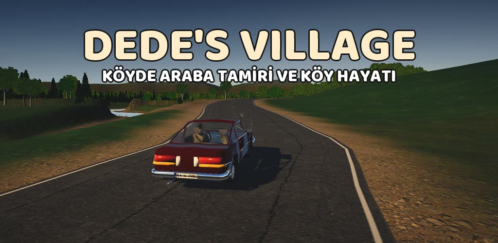
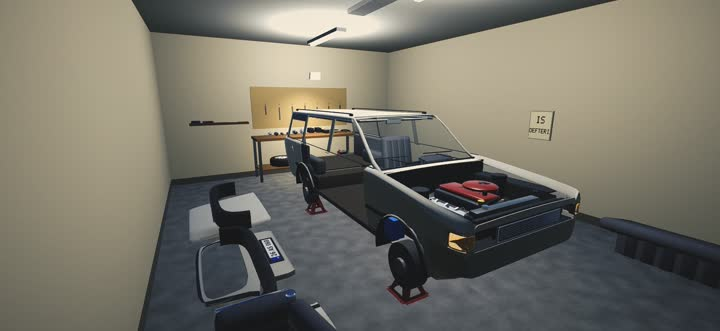
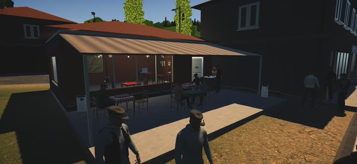
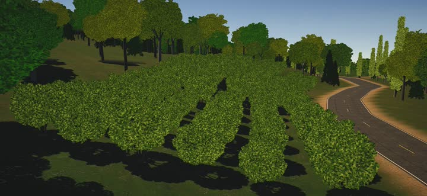

Karadeniz'de gerçek bir köy: dedenden kalan arabayı topla, traktörü çalıştır, fındık topla, kahvede okey oyna. Herkesten önce dene!

Google test için iki adım istiyor. Sırayla bas, telefonundaki Google hesabıyla gir.
Apple'ın test uygulaması TestFlight ile oynanır. Yüklü değilse önce onu indir.
itch.io'dan ücretsiz indir, zip'i aç, DedesVillage.exe'yi çalıştır.
itch.io'dan indirEn az (tahmini): Windows 10/11 64-bit · 4 çekirdekli işlemci (i5 4. nesil / Ryzen 3) · 8 GB RAM · DirectX 11, 2 GB ekran kartı (GTX 750 Ti / RX 460 / Iris Xe) · 2 GB boş alan
Önerilen: Ryzen 5 / i5 10. nesil · 8 GB RAM (oyun yaklaşık 4 GB kullanıyor) · GTX 1650 / RTX 3050
Telefon: Android 8.0 ve üstü (64-bit) · iPhone iOS 15 ve üstü


